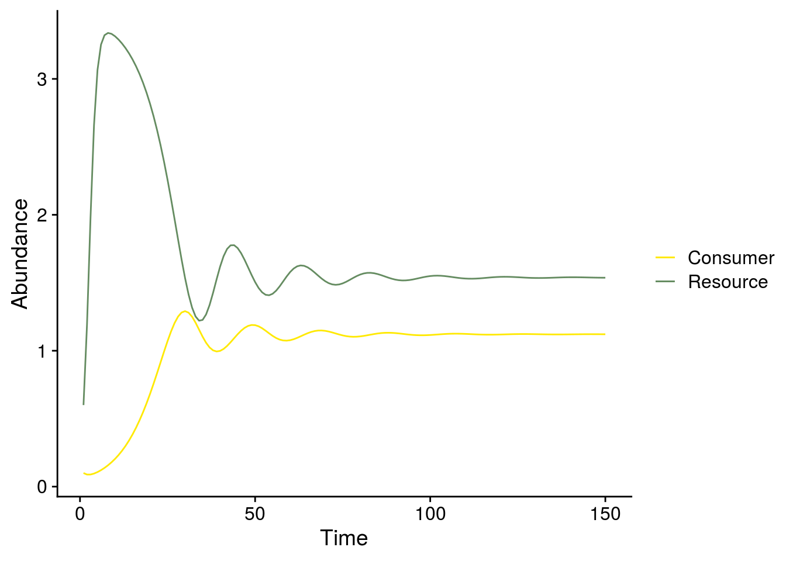
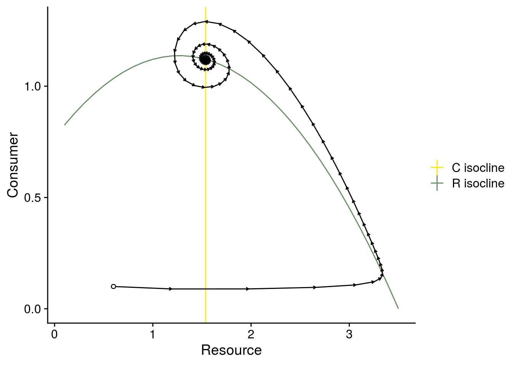
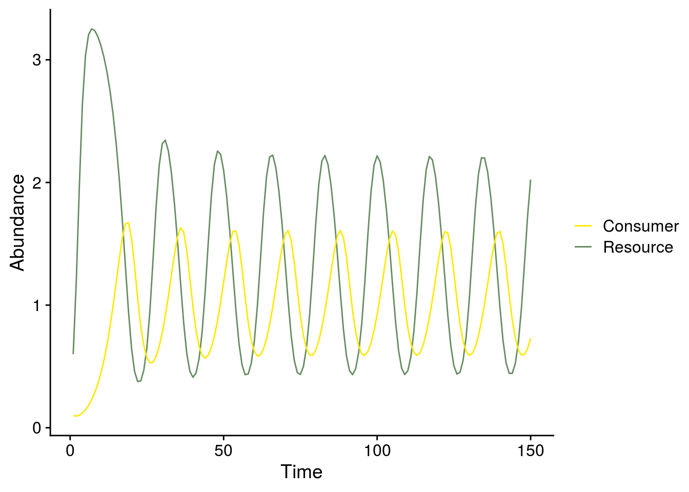
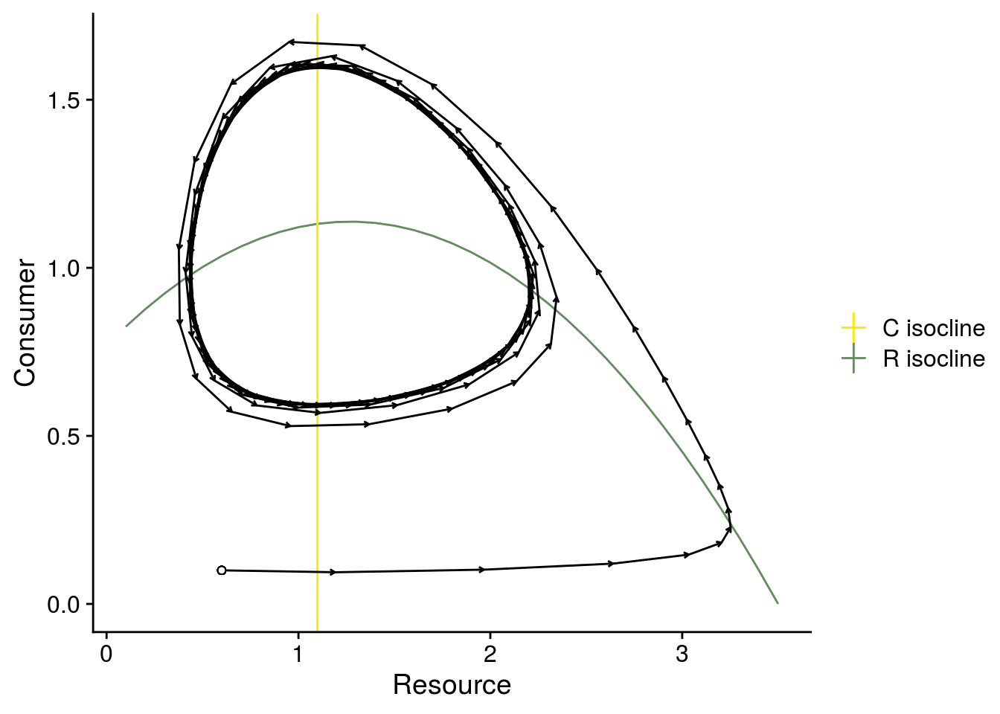
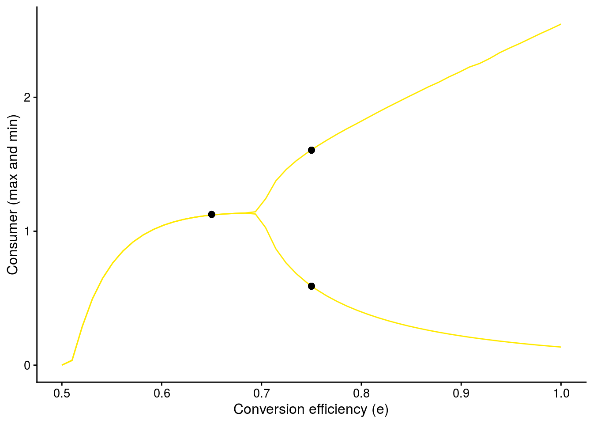
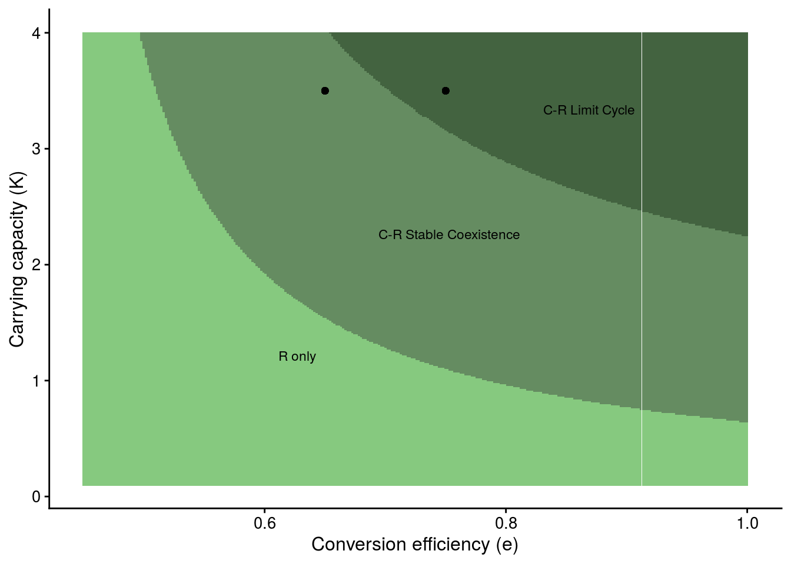
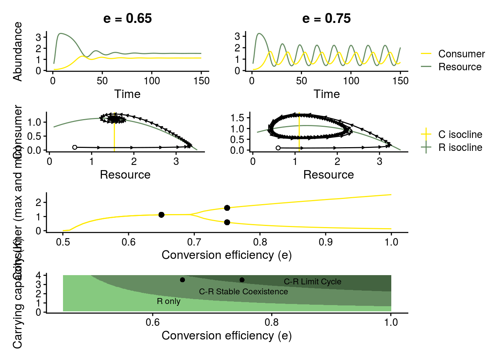

Last updated: 2021-08-03
Checks: 7 0
Knit directory: foodweb-theory/
This reproducible R Markdown analysis was created with workflowr (version 1.6.2). The Checks tab describes the reproducibility checks that were applied when the results were created. The Past versions tab lists the development history.
Great! Since the R Markdown file has been committed to the Git repository, you know the exact version of the code that produced these results.
Great job! The global environment was empty. Objects defined in the global environment can affect the analysis in your R Markdown file in unknown ways. For reproduciblity it’s best to always run the code in an empty environment.
The command set.seed(20200205) was run prior to running the code in the R Markdown file. Setting a seed ensures that any results that rely on randomness, e.g. subsampling or permutations, are reproducible.
Great job! Recording the operating system, R version, and package versions is critical for reproducibility.
Nice! There were no cached chunks for this analysis, so you can be confident that you successfully produced the results during this run.
Great job! Using relative paths to the files within your workflowr project makes it easier to run your code on other machines.
Great! You are using Git for version control. Tracking code development and connecting the code version to the results is critical for reproducibility.
The results in this page were generated with repository version b5ce8a9. See the Past versions tab to see a history of the changes made to the R Markdown and HTML files.
Note that you need to be careful to ensure that all relevant files for the analysis have been committed to Git prior to generating the results (you can use wflow_publish or wflow_git_commit). workflowr only checks the R Markdown file, but you know if there are other scripts or data files that it depends on. Below is the status of the Git repository when the results were generated:
Ignored files:
Ignored: .Rhistory
Ignored: .Rproj.user/
Untracked files:
Untracked: temp/
Note that any generated files, e.g. HTML, png, CSS, etc., are not included in this status report because it is ok for generated content to have uncommitted changes.
These are the previous versions of the repository in which changes were made to the R Markdown (analysis/rosenzweig-macarthur.Rmd) and HTML (docs/rosenzweig-macarthur.html) files. If you’ve configured a remote Git repository (see ?wflow_git_remote), click on the hyperlinks in the table below to view the files as they were in that past version.
| File | Version | Author | Date | Message |
|---|---|---|---|---|
| Rmd | b5ce8a9 | mabarbour | 2021-08-03 | Publish code for reproducing common theory figures. |
The code below reproduces Fig. 2B–G in the manuscript “An empricist’s guide to ecological theory”.
# load required libraries
library(deSolve)
library(seqinr)
library(tidyverse)
library(cowplot)
library(patchwork)
# set plot theme
theme_set(theme_cowplot())
# colors for plotting
color_palette <- c("#ffe900","#658c61")
color_states <- c("#436340","#658c61","#86c97f")
# source in Rosenzweig-MacArthur model
source('code/Models.R') # source in R-M C-R model# state variable values (initial values at beginning of "experiments")
R <- 0.6
C <- 0.1
i.state <- c(R=0.6,C=0.1)
# parameter values
r <- 1.0 # per capita rate of increase in resource
K <- 3.5 # prey carrying capacity
# e.exp1 <- 0.45
e.exp2 <- 0.65
e.exp3 <- 0.75
h <- 0.8 # handling time
m <- 0.5 # mortality rate of predator
a <- 1.3 # attack rate
# set simulation duration
Time <- 150
## create resource isocline, which is always the same
Rx <- seq(0.1,K,0.1) # manipulating different Resource densities to solve R isocline.
Riso <- expression(r/a * (1 + a*h*Rx) * (1 - Rx/K)) # set R = 0 and solved algebraically
RisoStable <- eval(Riso)## adjust parameters
p.rm2 <- c(r = r, e = e.exp2, a = a, K = K, h = h)
rm2 <- ode(i.state,1:Time, rmcr_v2, p.rm2)
# adjust resource and consumer isoclines
Ciso2 <- expression(m / (a * (e.exp2 - m*h))) #expression(m * Ro / (e.exp2 * a - m)) # adjusted attack rate
CisoStable2 <- eval(Ciso2)
## plot dynamics around consumer and resource isoclines.
# make arrow data
plot_arrows <- as.data.frame(cbind(rm2[-Time, ], rm2[-1, ]))
colnames(plot_arrows)[4:6] <- c("time.n1","R.n1","C.n1")
## time series
plot_exp2_temporal_dynamics <- ggplot(as.data.frame(rm2), aes(x = time)) +
geom_line(aes(y = R, color = "Resource")) +
geom_line(aes(y = C, color = "Consumer")) +
ylab("Abundance") +
xlab("Time") +
scale_color_manual(values = color_palette, name = "")
#scale_color_viridis_d(name = "")
plot_exp2_temporal_dynamics
# phase plane
plot_exp2_isocline_dynamics <- data.frame(Rx = Rx, RisoStable = RisoStable) %>%
ggplot(., aes(x = Rx, y = RisoStable)) +
geom_line(aes(color = "R isocline")) +
geom_vline(aes(xintercept = CisoStable2, color = "C isocline")) +
scale_color_manual(values = color_palette, name = "") +
#scale_color_viridis_d(name = "") +
geom_segment(data = plot_arrows, aes(x = R, xend = R.n1, y = C, yend = C.n1), arrow = arrow(length = unit(0.1,"cm"))) +
geom_point(aes(x = i.state[1], y = i.state[2]), shape = 21, fill = "white") +
xlab("Resource") +
ylab("Consumer")
plot_exp2_isocline_dynamics
## adjust parameter values
p.rm3 <- c(r = r, e = e.exp3, a = a, K = K, h = h)
rm3 <- ode(i.state,1:Time, rmcr_v2, p.rm3)
## adjust consumer isocline
Ciso3 <- expression(m / (a * (e.exp3 - m*h))) #expression(m * Ro / (e.exp3 * a - m))
CisoStable3 <- eval(Ciso3)
## plot dynamics around consumer and resource isoclines.
# make arrow data
plot_arrows <- as.data.frame(cbind(rm3[-Time, ], rm3[-1, ]))
colnames(plot_arrows)[4:6] <- c("time.n1","R.n1","C.n1")
## time series
plot_exp3_temporal_dynamics <- ggplot(as.data.frame(rm3), aes(x = time)) +
geom_line(aes(y = R, color = "Resource")) +
geom_line(aes(y = C, color = "Consumer")) +
ylab("Abundance") +
xlab("Time") +
scale_color_manual(values = color_palette, name = "")
#scale_color_viridis_d(name = "")
plot_exp3_temporal_dynamics
# phase plane
plot_exp3_iscoline_dynamics <- data.frame(Rx = Rx, RisoStable = RisoStable) %>%
ggplot(., aes(x = Rx, y = RisoStable)) +
geom_line(aes(color = "R isocline")) +
geom_vline(aes(xintercept = CisoStable3, color = "C isocline")) +
scale_color_manual(values = color_palette, name = "") +
#scale_color_viridis_d(name = "") +
geom_segment(data = plot_arrows, aes(x = R, xend = R.n1, y = C, yend = C.n1), arrow = arrow(length = unit(0.1,"cm"))) +
geom_point(aes(x = i.state[1], y = i.state[2]), shape = 21, fill = "white") +
xlab("Resource") +
ylab("Consumer")
plot_exp3_iscoline_dynamics
Shows how consumer-resource dynamics change along a continuous gradient of conversion efficiency.
# much of this code was derived from: http://www.r-bloggers.com/r-tools-for-dynamical-systems-bifurcation-plot-in-r%C2%A0for%C2%A0system%C2%A0of%C2%A0odes/)
Time <- 300 # need bigger time range to make sure I get the dynamics
param.name <- "e" # choose parameter to perturb
e.init <- 0.5
param.seq <- seq(e.init, 1,length=50) # choose range of parameters
p.rm4 <- c(r = r, e = e.init, a = a, K = K, h = h, m=m) # set starting parameters.
param.index <- which(param.name == names(p.rm4)) # tells the loop which parameter in "p.rm4" to grab for manipulation.
out <- list()
for (i in 1:length(param.seq))
out[[i]] <- matrix(0, Time, length(i.state))
for (i in 1:length(param.seq)) {
# set params
p.rm4.loop <- p.rm4
p.rm4.loop[param.index] <- param.seq[i] # changes the parameter value for manipulation in the "init" function below.
# converge
init <- ode(i.state, 1:Time, rmcr_v2, p.rm4.loop)
# get converged points
out[[i]] <- ode(init[Time,-1], 1:Time, rmcr_v2, p.rm4.loop)[,-1]
}
range.lim <- lapply(out, function(x) apply(x, 2, range)) # get abundance ranges for each set of parameters
range.lim <- apply(do.call("rbind", range.lim), 2, range) # get abundance ranges across parameters
## consumer bifurcation plot
plot.variable <- "C" # choose which variable to show
# get max and min for consumer and resource abundances once transient dynamics have settled down
sim.list <- list()
for (i in 1:length(param.seq)) {
sim.list[[i]] <- data.frame(rep = i,
R_max = max(out[[i]][200:300,"R"]),
R_min = min(out[[i]][200:300,"R"]),
C_max = max(out[[i]][200:300,"C"]),
C_min = min(out[[i]][200:300,"C"]))
}
# gather into a data frame
sim.df <- plyr::ldply(sim.list) %>%
mutate(e = param.seq) %>%
gather(state, value, -rep, -e) %>%
separate(state, into = c("species","max_min"))
# Consumer bifurcation plot
bifur_C_plot <- sim.df %>%
filter(species == "C") %>%
ggplot(., aes(x = e, y = value, group=max_min)) +
geom_line(color = color_palette[1]) +
ylab("Consumer (max and min)") +
xlab("Conversion efficiency (e)") +
# plot points directly from sim
geom_point(aes(x=e.exp2, y=max(rm2[100:150,"C"])), size = 2) +
geom_point(aes(x=e.exp3, y=max(rm3[100:150,"C"])), size = 2) +
geom_point(aes(x=e.exp3, y=min(rm3[100:150,"C"])), size = 2) +
theme_cowplot(font_size = 12)
bifur_C_plot
Shows how changing consumer conversion efficiency (e) and the resource’s carrying capacity (K) qualitatively alters the dynamics of the system.
param.name.1 <- "e" # choose parameter to perturb
param.name.2 <- "K"
grain <- 300
e.init <- 0.45
K.init <- 0.1
param.seq.1 <- seq(e.init, 1, length = grain) # choose range of parameters
param.seq.2 <- seq(K.init, 4, length = grain) # choose second range of parameters
param.seq <- expand.grid(e = param.seq.1, K = param.seq.2) %>%
mutate(r = r, a = a, h = h) %>%
mutate(R.eq = m/(a*(e-m*h))) %>%
mutate(C.eq = (r/a)*(1-R.eq/K)*(1+a*h*R.eq),
Stability = K - (e + h*m)/(a*h*(e-h*m))) %>%
mutate(State = ifelse(C.eq < 0, "R only",
ifelse(Stability < 0, "C-R Stable Coexistence", "C-R Limit Cycle")))
df_geom_text <- param.seq %>%
group_by(State) %>%
summarise_at(vars(e, K), list(mean))
plot_e_r_manip <- param.seq %>%
ggplot(., aes(x = e, y = K)) +
geom_tile(aes(fill = State)) +
scale_fill_manual(values = color_states, name = "") +
geom_point(aes(x = e.exp2, y = 3.5)) + # new K
geom_point(aes(x = e.exp3, y = 3.5)) + # new K
xlab("Conversion efficiency (e)") +
ylab("Carrying capacity (K)") +
geom_text(data = df_geom_text, aes(x = e, y = K, label = State), size = 3) +
theme_cowplot(font_size = 12) +
theme(legend.position = "none")
plot_e_r_manip
# use patchwork for multi-panel plot
plot_temporal <- plot_exp2_temporal_dynamics + ggtitle("e = 0.65") + theme_cowplot(font_size = 12) + theme(legend.position = "none", plot.title = element_text(hjust = 0.5)) +
plot_exp3_temporal_dynamics + ylab("") + ggtitle("e = 0.75") + theme_cowplot(font_size = 12) +
theme(plot.title = element_text(hjust = 0.5))
plot_isocline <- plot_exp2_isocline_dynamics + theme_cowplot(font_size = 12) + theme(legend.position = "none") +
plot_exp3_iscoline_dynamics + ylab("") + theme_cowplot(font_size = 12)
# final plot
plot_temporal / plot_isocline / bifur_C_plot / plot_e_r_manip
ggsave(filename = "figures/rosenzweig-macarthur.png", width = 6, height = 8)
sessionInfo()R version 4.1.0 (2021-05-18)
Platform: x86_64-pc-linux-gnu (64-bit)
Running under: Ubuntu 16.04.7 LTS
Matrix products: default
BLAS: /usr/lib/libblas/libblas.so.3.6.0
LAPACK: /usr/lib/lapack/liblapack.so.3.6.0
locale:
[1] LC_CTYPE=en_US.UTF-8 LC_NUMERIC=C
[3] LC_TIME=en_US.UTF-8 LC_COLLATE=en_US.UTF-8
[5] LC_MONETARY=en_US.UTF-8 LC_MESSAGES=en_US.UTF-8
[7] LC_PAPER=en_US.UTF-8 LC_NAME=C
[9] LC_ADDRESS=C LC_TELEPHONE=C
[11] LC_MEASUREMENT=en_US.UTF-8 LC_IDENTIFICATION=C
attached base packages:
[1] stats graphics grDevices utils datasets methods base
other attached packages:
[1] patchwork_1.1.1 cowplot_1.1.1 forcats_0.5.1 stringr_1.4.0
[5] dplyr_1.0.7 purrr_0.3.4 readr_1.4.0 tidyr_1.1.3
[9] tibble_3.1.3 ggplot2_3.3.5 tidyverse_1.3.1 seqinr_4.2-8
[13] deSolve_1.28 workflowr_1.6.2
loaded via a namespace (and not attached):
[1] Rcpp_1.0.6 lubridate_1.7.10 assertthat_0.2.1 rprojroot_2.0.2
[5] digest_0.6.27 utf8_1.2.2 plyr_1.8.6 R6_2.5.0
[9] cellranger_1.1.0 backports_1.2.1 reprex_2.0.0 evaluate_0.14
[13] highr_0.9 httr_1.4.2 pillar_1.6.1 rlang_0.4.11
[17] readxl_1.3.1 rstudioapi_0.13 whisker_0.4 jquerylib_0.1.4
[21] rmarkdown_2.9 labeling_0.4.2 munsell_0.5.0 broom_0.7.8
[25] compiler_4.1.0 httpuv_1.6.1 modelr_0.1.8 xfun_0.24
[29] pkgconfig_2.0.3 htmltools_0.5.1.1 tidyselect_1.1.1 fansi_0.5.0
[33] crayon_1.4.1 dbplyr_2.1.1 withr_2.4.2 later_1.2.0
[37] MASS_7.3-54 grid_4.1.0 jsonlite_1.7.2 gtable_0.3.0
[41] lifecycle_1.0.0 DBI_1.1.1 git2r_0.28.0 magrittr_2.0.1
[45] scales_1.1.1 cli_3.0.1 stringi_1.7.3 farver_2.1.0
[49] fs_1.5.0 promises_1.2.0.1 xml2_1.3.2 bslib_0.2.5.1
[53] ellipsis_0.3.2 generics_0.1.0 vctrs_0.3.8 tools_4.1.0
[57] ade4_1.7-17 glue_1.4.2 hms_1.1.0 yaml_2.2.1
[61] colorspace_2.0-2 rvest_1.0.0 knitr_1.33 haven_2.4.1
[65] sass_0.4.0